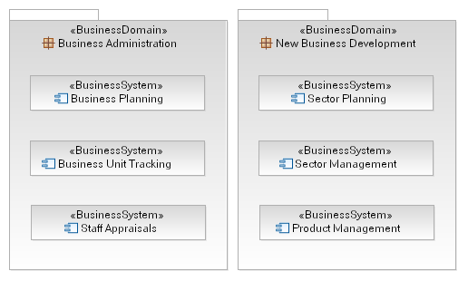

| Producto de trabajo: Dominio empresarial |
 |
|
| To provide a logical (only) grouping of Business Systems such that they are categorized according to the competencies of the larger organization. |
| Entrada a | Obligatoria: | Opcional:
| Externa:
|
|---|
A Business Domain is a tool to allow a Artifact: Business Analysis Model to group business systems, especially when a model is used to describe high-level business architecture or organization (such as that produced by Concept: Component Business Modeling). The Business Domain itself is the expression of a competency of the business whereas the contained Artifact: Business Systems are the autonomous units of the business operating within that particular domain. As described in Guideline: Business System Systems communicate using provided and required Business Services (capabilities of the system) and the introduction of Business Domains does not complicate this in any way, there is no notion of priviledged communication between Systems in the same Domain (for example). The example below demonstrates a partial model with business domains containing business systems, we assume that the enclosed systems contain far more detail than is shown here.  One key aspect of the Business Domain is that Business Systems are contained within the domain; that is a Business System may only be categorized as part of one Business Domain at any time. |
| Opcional | |
|---|---|
| Planeado |
| Business Domains are not intented to model organizational structures and should not be used to do so; they are logical containers for Business Systems only. |
| Impacto de no tener | A Artifact: Business Analysis Model which does include a number of Artifact: Business System but which does not manage them using Business Domains provides far less information in terms of the catagorization of the systems it includes. When the model is used as part of a broad business transformation effort then the use of Business Domains is critical. |
|---|---|
| Razones para no necesitar | When the Artifact: Business Analysis Model represents a smaller effort and focused perhaps only upon one Business System then the additional overhead of modeling a corresponding Business Domain may be unnecessary. |
| Opciones de representación | UML Representation: a package, stereotyped as <<Business Domain>> within the Artifact: Business Analysis Model. |
© Copyright IBM Corp. 1987, 2006. Reservados todos los derechos. |